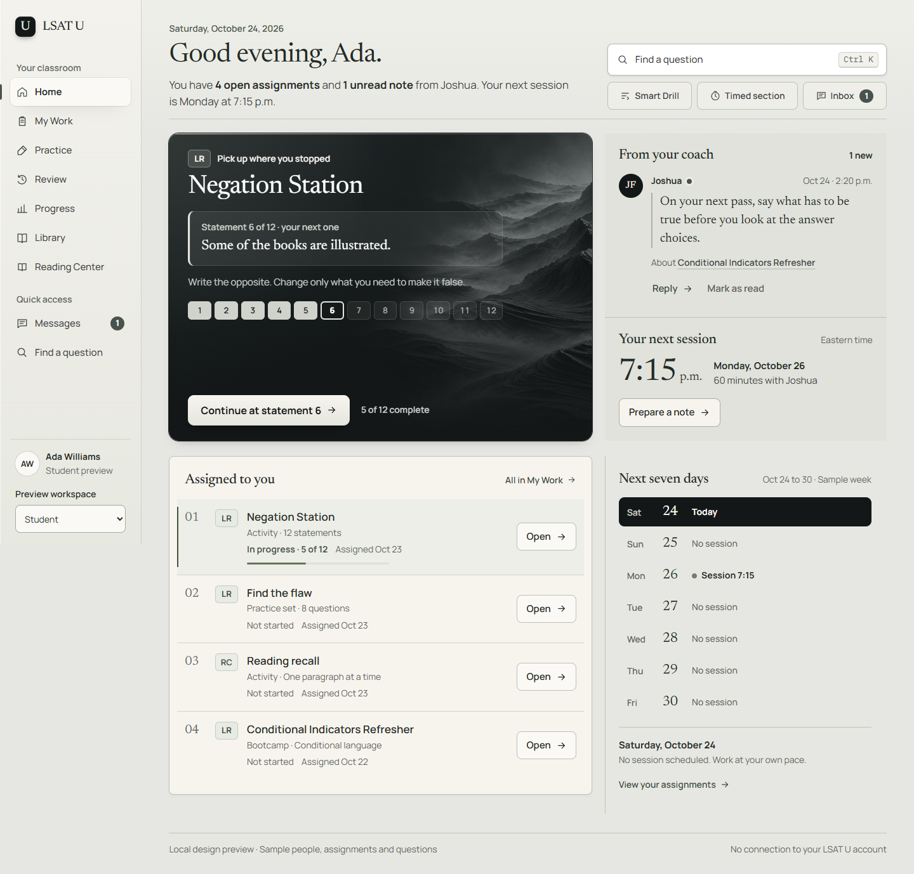

Latest
11 · Claude studio
Charcoal and off-white Home with a primary assignment sheet, quiet coach/session rail and frameless calendar. Surface hierarchy and details refined through a Claude review loop.
Local synthetic prototype. Earlier versions preserved. No production change or user visual acceptance claimed.